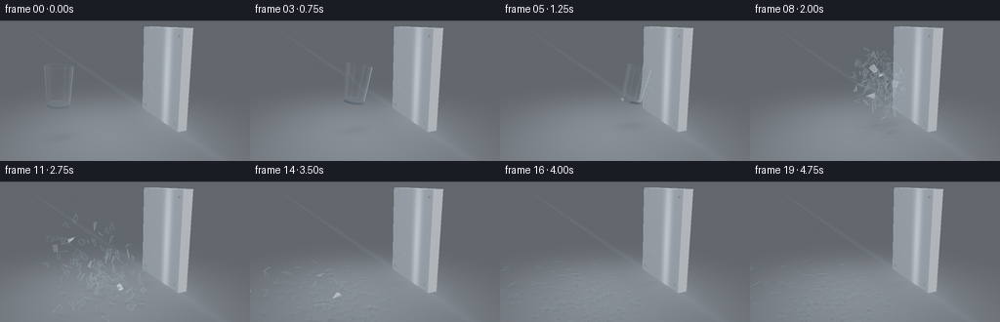
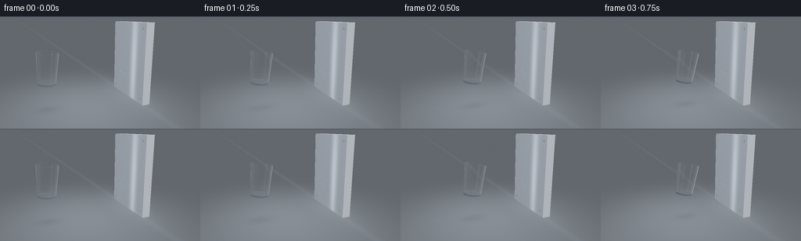
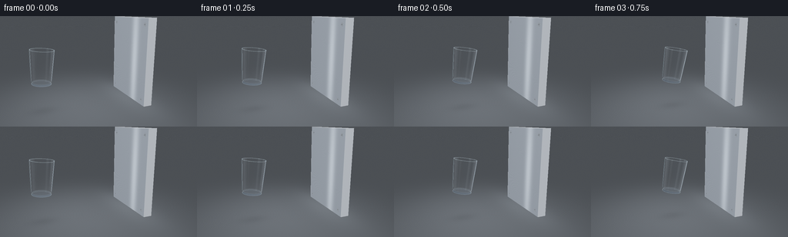
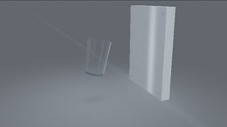
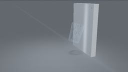
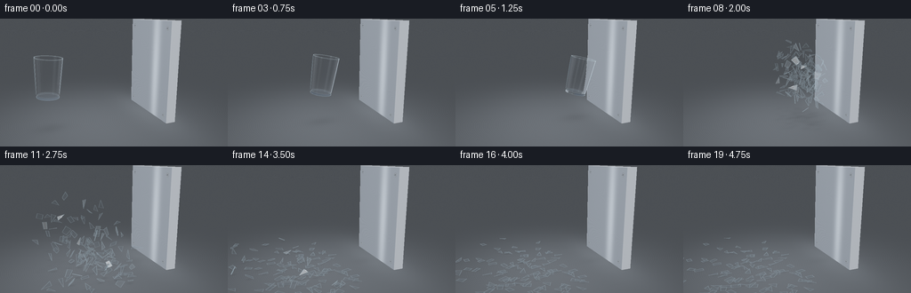

CODING AGENTS AS PIXEL WORLD MODELS
traex/GPT-6.1-Sol · phygen_134
点击播放 · 原生 RGB 像素
逐轮保存的候选
回放视频、检查图与代码变化。
每份候选均可单独播放。实际图片检查记录在下方工具轨迹中。
候选 01播放与检查图
点击播放 · 原生 RGB 像素


展开代码变化
--- 上一保存版本
+++ 本次保存版本
@@ -0,0 +1,383 @@
+import math
+from pathlib import Path
+import numpy as np
+from PIL import Image, ImageDraw, ImageFilter
+import artifact_io
+
+# A self-contained geometric renderer; all geometry, illumination and motion are procedural.
+ROOT=Path(__file__).resolve().parent
+W,H=768,432
+S=3
+rng=np.random.default_rng(134)
+CAM=np.array([-3.2,-7.7,3.55])
+TARGET=np.array([-.05,0,1.3])
+F=(TARGET-CAM); F/=np.linalg.norm(F)
+RIGHT=np.cross(F,[0,0,1.]); RIGHT/=np.linalg.norm(RIGHT)
+UP=np.cross(RIGHT,F)
+FOCAL=790.
+yy,xx=np.mgrid[0:H,0:W]
+D=F+((xx-W/2+.5)/FOCAL)[...,None]*RIGHT+((H/2-yy-.5)/FOCAL)[...,None]*UP
+D/=np.linalg.norm(D,axis=-1,keepdims=True)
+ORIG=np.broadcast_to(CAM,D.shape)
+LIGHT=np.array([-3.0,-4.5,7.0])
+
+
+def norm(a): return a/np.maximum(np.linalg.norm(a,axis=-1,keepdims=True),1e-10)
+def reflect(v,n): return v-2*np.sum(v*n,axis=-1,keepdims=True)*n
+
+def environment(d):
+ # Large soft photographic strip lights in a dark blue-grey studio.
+ z=d[...,2]
+ c=np.zeros(d.shape)+np.array([.075,.09,.105])
+ c+=np.maximum(z,0)[...,None]*np.array([.14,.16,.18])
+ a=np.exp(-((d[...,0]+.42)/.13)**8-((d[...,1]+.30)/.62)**8)*np.clip((z-.13)*4,0,1)
+ b=np.exp(-((d[...,0]-.66)/.055)**4-((d[...,1]+.38)/.43)**8)*np.clip((z+.1)*3,0,1)
+ c+=a[...,None]*np.array([2.9,3.0,3.1])+b[...,None]*np.array([1.4,1.7,2.0])
+ c+=np.exp(-((d[...,0]+.85)/.08)**4-((z-.1)/.3)**4)[...,None]*np.array([.55,.63,.70])
+ return c
+
+
+def scene(o,d,shadows=None):
+ shape=d.shape[:-1]
+ # Smooth charcoal studio background.
+ col=np.zeros(d.shape)+np.array([.033,.044,.060])
+ col+=np.clip(d[...,2]+.15,0,.65)[...,None]*np.array([.03,.04,.055])
+ dep=np.full(shape,1e5)
+ # Floor plane: satin machined metal, with diffuse pools of illumination.
+ t=-o[...,2]/np.where(np.abs(d[...,2])>1e-8,d[...,2],1e-8)
+ valid=(t>0)
+ p=o+d*t[...,None]
+ x,y=p[...,0],p[...,1]
+ v=.12+.14*np.exp(-((x+.8)/3.4)**2-((y+.4)/3.7)**2)
+ brush=(np.sin(y*260+np.sin(x*1.1)*.6)+.4*np.sin(y*659+x*2.1))*.003
+ fc=(v+brush)[...,None]*np.array([.72,.81,.92])
+ fc+=np.exp(-((x-1.45)/.18)**2)[...,None]*np.array([.012,.015,.018])
+ if shadows:
+ shade=np.zeros(shape)
+ for sx,sy,rad,amount in shadows:
+ shade+=amount*np.exp(-((x-sx)/rad)**2-((y-sy)/(rad*.64))**2)
+ fc*=np.clip(1-shade, .4,1)[...,None]
+ # Subtle grazing reflections of the wall.
+ fc+=np.exp(-((x-1.35)/.7)**2-((y-.15)/1.9)**2)[...,None]*np.array([.035,.04,.045])
+ col=np.where(valid[...,None],fc,col); dep=np.where(valid,t,dep)
+ # Thick, rigid slab. Its machined front side is the impact surface.
+ lo=np.array([1.40,-1.08,0]); hi=np.array([1.74,1.58,3.35])
+ inv=1/np.where(np.abs(d)>1e-10,d,1e-10)
+ a=(lo-o)*inv;b=(hi-o)*inv
+ tn=np.maximum.reduce(np.minimum(a,b),axis=-1); tf=np.minimum.reduce(np.maximum(a,b),axis=-1)
+ ok=(tf>=np.maximum(tn,0))&(tn<dep)&(tn>0)
+ q=o+tn[...,None]*d
+ near=np.minimum(a,b)
+ face=np.argmax(near,axis=-1)
+ n=np.zeros(d.shape)
+ for j in range(3): n[...,j]=np.where(face==j,-np.sign(d[...,j]),0)
+ ld=norm(LIGHT-q)
+ diffuse=np.maximum(np.sum(n*ld,axis=-1),0)
+ rd=reflect(d,n)
+ metal=environment(rd)*.17+np.array([.22,.25,.29])*(.7+diffuse[...,None]*.55)
+ # Horizontal microscopic brushed grain and a long broad white reflection.
+ lines=.008*np.sin(q[...,2]*985+np.sin(q[...,1]*8))+.004*np.sin(q[...,2]*2419)
+ band=np.exp(-((q[...,1]+.25)/.22)**2)*(.20+.08*np.sin(q[...,2]*.9))
+ metal+=(lines+band)[...,None]*np.array([.82,.91,1.0])
+ edge=np.minimum.reduce([np.abs(q[...,1]-lo[1]),np.abs(q[...,1]-hi[1]),np.abs(q[...,2]-hi[2])])
+ metal+=np.exp(-(edge/.013)**2)[...,None]*.16
+ # Four recessed bolt heads make the panel read unambiguously as solid metal.
+ for by in [-.86,1.36]:
+ for bz in [.22,3.11]:
+ rr=np.sqrt((q[...,1]-by)**2+(q[...,2]-bz)**2)
+ ring=(rr<.064)&(face==0)
+ head=np.clip(1-rr/.064,0,1)
+ bc=np.array([.10,.12,.14])+head[...,None]*np.array([.22,.24,.27])
+ bc+=np.exp(-((rr-.052)/.006)**2)[...,None]*.20
+ slot=(np.abs(q[...,2]-bz)<.008)&(np.abs(q[...,1]-by)<.034)
+ bc=np.where(slot[...,None],bc*.3,bc)
+ metal=np.where(ring[...,None],bc,metal)
+ col=np.where(ok[...,None],metal,col);dep=np.where(ok,tn,dep)
+ return col,dep
+
+
+HEIGHT=1.23; RB=.345; RT=.425; THICK=.023
+
+def basis(axis):
+ a=norm(np.asarray(axis)); b=norm(np.cross([0,1,0],a)); c=np.cross(a,b)
+ return np.stack([b,c,a],axis=1)
+
+
+def cup_hit(o,d,base,rot):
+ # Exact intersections with the outer cone, inner cone, base, and open lip.
+ q=(o-base)@rot; v=d@rot
+ size=q.shape[:-1]
+ best=np.full(size,np.inf); ns=np.zeros(q.shape)
+ k=(RT-RB)/HEIGHT
+ for radius,zlo,zhi,inward in [(RB,0,HEIGHT,False),(RB-THICK,.073,HEIGHT,True)]:
+ rz=radius+k*q[...,2]
+ av=v[...,0]**2+v[...,1]**2-(k*v[...,2])**2
+ bv=2*(q[...,0]*v[...,0]+q[...,1]*v[...,1]-rz*k*v[...,2])
+ cv=q[...,0]**2+q[...,1]**2-rz**2
+ disc=bv*bv-4*av*cv
+ root=np.sqrt(np.maximum(disc,0))
+ for sign in [-1,1]:
+ t=(-bv+sign*root)/(2*np.where(np.abs(av)>1e-10,av,1e-10))
+ z=q[...,2]+t*v[...,2]
+ good=(disc>=0)&(t>1e-4)&(z>=zlo)&(z<=zhi)&(t<best)
+ hp=q+t[...,None]*v
+ n=norm(np.stack([hp[...,0],hp[...,1],-k*(radius+k*z)],axis=-1))
+ if inward:n=-n
+ ns=np.where(good[...,None],n,ns);best=np.where(good,t,best)
+ for z,low,high,sgn in [(0,0,RB,-1),(.073,0,RB-THICK+k*.073,1),(HEIGHT,RT-THICK,RT,1)]:
+ t=(z-q[...,2])/np.where(np.abs(v[...,2])>1e-9,v[...,2],1e-9)
+ hp=q+t[...,None]*v
+ r2=hp[...,0]**2+hp[...,1]**2
+ good=(t>1e-4)&(r2>=low*low)&(r2<=high*high)&(t<best)
+ n=np.zeros(q.shape);n[...,2]=sgn
+ ns=np.where(good[...,None],n,ns);best=np.where(good,t,best)
+ return best,ns@rot.T
+
+
+def trace_cup(base,rot,background,scene_depth):
+ # Fresnel reflections and real refraction through thin glass walls.
+ t,n=cup_hit(ORIG,D,base,rot)
+ mask=(t<scene_depth)
+ if not mask.any():return background
+ o=ORIG[mask].copy(); d=D[mask].copy()
+ acc=np.zeros_like(o); through=np.ones_like(o); alive=np.ones(len(o),bool)
+ # Refraction through both front and rear inner/outer walls (up to 10 interfaces).
+ for bounce in range(10):
+ ids=np.flatnonzero(alive)
+ if not len(ids):break
+ oo,dd=o[ids],d[ids]
+ tt,nn=cup_hit(oo,dd,base,rot)
+ back,bd=scene(oo,dd)
+ hit=tt<bd
+ miss=ids[~hit]
+ acc[miss]+=through[miss]*back[~hit];alive[miss]=False
+ if not hit.any():continue
+ ids=ids[hit];tt=tt[hit];nn=nn[hit];dd=dd[hit];oo=oo[hit]
+ p=oo+tt[:,None]*dd
+ dot=np.sum(dd*nn,axis=-1)
+ entering=dot<0
+ normal=np.where(entering[:,None],nn,-nn)
+ eta=np.where(entering,1/1.47,1.47)
+ cosine=-np.sum(dd*normal,axis=-1)
+ cost2=1-eta*eta*(1-cosine*cosine)
+ fres=.0362+(1-.0362)*(1-cosine)**5
+ fres=np.where(cost2<0,1,fres)
+ reflected=reflect(dd,normal)
+ rcol,rdep=scene(p+normal*.0003,reflected)
+ # Reflections of the softboxes coexist with reflected metal and floor.
+ rcol+=environment(reflected)*np.clip(reflected[:,2]+.35,0,1)[:,None]
+ acc[ids]+=through[ids]*fres[:,None]*rcol
+ through[ids]*=(1-fres[:,None])
+ through[ids]*=np.where(entering[:,None],1,np.exp(-tt[:,None]*np.array([.022,.009,.004])))
+ nd=eta[:,None]*dd+(eta*cosine-np.sqrt(np.maximum(cost2,0)))[:,None]*normal
+ nd=np.where((cost2<0)[:,None],reflected,nd)
+ d[ids]=norm(nd);o[ids]=p+d[ids]*.0004
+ ids=np.flatnonzero(alive)
+ if len(ids):
+ c,_=scene(o[ids],d[ids]); acc[ids]+=through[ids]*c
+ result=background.copy();result[mask]=acc
+ return result
+
+
+def project(p):
+ q=p-CAM
+ depth=q@F
+ return np.stack([W/2+FOCAL*(q@RIGHT)/depth,H/2-FOCAL*(q@UP)/depth],axis=-1),depth
+
+
+def tone(c):
+ c=np.maximum(c,0)
+ # soft highlight shoulder with a filmic exposure.
+ c=1-np.exp(-c*1.55)
+ return (np.clip(c,0,1)**(1/2.2)*255+.5).astype(np.uint8)
+
+
+def axis_rotation(angle):return basis([math.sin(angle),0,math.cos(angle)])
+
+IMPACT=1.5
+ANGLE=.28
+FINALROT=axis_rotation(ANGLE)
+# The advancing rim is exactly tangent to the steel face at impact.
+END_X=1.40-(math.sin(ANGLE)*HEIGHT+math.cos(ANGLE)*RT)
+BASE_Z=.84
+END=np.array([END_X,0,BASE_Z])
+START=np.array([-2.25,0,1.05])
+
+# Build broken wall panels from staggered angular bands. Every shard originates
+# on the original cup, rather than appearing as unrelated particles.
+shards=[]
+N=17; levels=[0,.24,.51,.78,1.02,HEIGHT]
+for iz in range(len(levels)-1):
+ for j in range(N):
+ a0=(j+(iz%2)*.33)*2*math.pi/N
+ a1=a0+2*math.pi/N
+ z0=levels[iz];z1=levels[iz+1]
+ pts=[]
+ for a,z in [(a0,z0),(a1,z0),(a1+(rng.random()-.5)*.20,z1),(a0+(rng.random()-.5)*.20,z1)]:
+ r=RB+(RT-RB)*z/HEIGHT
+ pts.append([r*math.cos(a),r*math.sin(a),z])
+ # Angular chips alternate between quadrilateral and triangular facets.
+ pts=np.array(pts)
+ groups=[pts] if rng.random()<.64 else [pts[[0,1,2]],pts[[0,2,3]]]
+ for poly in groups:
+ cen=poly.mean(axis=0); worldcen=END+FINALROT@cen
+ local=(poly-cen)@FINALROT.T
+ rdir=norm(np.array([cen[0],cen[1],0.]))@FINALROT.T
+ vel=np.array([-rng.uniform(.6,2.7),rng.uniform(-1.7,1.7),rng.uniform(-.1,2.4)])
+ vel+=rdir*.40
+ # The few fragments nearest the far side rebound most violently.
+ vel[0]-=max(worldcen[0]-.8,0)*1.9
+ shards.append(dict(local=local,center=worldcen,v=vel,spin=rng.normal(size=3)*rng.uniform(2,7),mass=len(poly),th=.016))
+# Fractured heavy bottom: thin irregular wedges of transparent glass.
+for j in range(12):
+ a=2*math.pi*j/12;b=2*math.pi*(j+1)/12
+ poly=np.array([[0,0,.025],[RB*math.cos(a),RB*math.sin(a),.025],[RB*math.cos(b),RB*math.sin(b),.025]])
+ cen=poly.mean(0)
+ shards.append(dict(local=(poly-cen)@FINALROT.T,center=END+FINALROT@cen,v=np.array([-rng.uniform(.6,2),rng.uniform(-1,1),rng.uniform(.2,1.9)]),spin=rng.normal(size=3)*4,mass=3,th=.06))
+
+
+def rotation(v):
+ angle=np.linalg.norm(v)
+ if angle<1e-8:return np.eye(3)
+ a=v/angle;K=np.array([[0,-a[2],a[1]],[a[2],0,-a[0]],[-a[1],a[0],0]])
+ return np.eye(3)+math.sin(angle)*K+(1-math.cos(angle))*(K@K)
+
+
+def shard_geometry(sh,t):
+ # Ballistic flight and a damped floor collision, including sliding and tumbling.
+ g=4.1
+ c0=sh['center'];v=sh['v'];rad=.034
+ land=(v[2]+math.sqrt(v[2]**2+2*g*(c0[2]-rad)))/g
+ if t<=land:
+ c=c0+v*t+np.array([0,0,-.5*g*t*t]);r=rotation(sh['spin']*t)
+ poly=c+sh['local']@r.T
+ # no fragment penetrates the fixed metallic wall
+ shift=max(np.max(poly[:,0])-1.397,0);poly[:,0]-=shift
+ return poly,c,False
+ q=t-land
+ vl=v.copy();vl[2]=0
+ # friction rapidly damps translation, while the small remaining bounce dies out.
+ c=c0+v*land+np.array([0,0,-.5*g*land*land])
+ c+=vl*.44*(1-math.exp(-q/.44))
+ c[2]=rad+abs(math.sin(q*9))*math.exp(-q*3.7)*.12
+ r=rotation(sh['spin']*(land+.18*(1-math.exp(-q/.18))))
+ poly=sh['local']@r.T
+ # flattened glass faces settle on the steel floor over the first half second.
+ blend=1-math.exp(-q*6)
+ normal=norm(np.cross(poly[1]-poly[0],poly[2]-poly[0]))
+ target=np.array([0,0,1 if normal[2]>0 else -1])
+ ax=np.cross(normal,target);ang=math.acos(np.clip(normal@target,-1,1))
+ if np.linalg.norm(ax)>1e-8:poly=poly@rotation(norm(ax)*ang*blend).T
+ poly+=c
+ poly[:,2]+=max(.014-np.min(poly[:,2]),0)
+ return poly,c,True
+
+
+def render_shards(color,depth,geoms):
+ # Back-to-front transparent facets, with reflection, transmitted background,
+ # tiny normal-dependent refraction and sharp thin cut edges.
+ order=sorted(geoms,key=lambda a:np.mean((a[0]-CAM)@F),reverse=True)
+ image=color.copy()
+ for poly,center,settled,th in order:
+ normal=norm(np.cross(poly[1]-poly[0],poly[2]-poly[0]))
+ for side in [0,1]:
+ pp=poly+normal*(side-.5)*th
+ pts,zz=project(pp)
+ if np.any(zz<=0):continue
+ x0=max(0,int(np.floor(pts[:,0].min()))-1);x1=min(W,int(np.ceil(pts[:,0].max()))+1)
+ y0=max(0,int(np.floor(pts[:,1].min()))-1);y1=min(H,int(np.ceil(pts[:,1].max()))+1)
+ if x1<=x0 or y1<=y0:continue
+ X,Y=np.meshgrid(np.arange(x0,x1)+.5,np.arange(y0,y1)+.5)
+ inside=np.zeros(X.shape,bool);Z=np.ones(X.shape)*1e5
+ for k in range(1,len(pts)-1):
+ aa,bb,cc=pts[0],pts[k],pts[k+1]
+ den=(bb[1]-cc[1])*(aa[0]-cc[0])+(cc[0]-bb[0])*(aa[1]-cc[1])
+ if abs(den)<1e-8:continue
+ u=((bb[1]-cc[1])*(X-cc[0])+(cc[0]-bb[0])*(Y-cc[1]))/den
+ v=((cc[1]-aa[1])*(X-cc[0])+(aa[0]-cc[0])*(Y-cc[1]))/den
+ w=1-u-v
+ isin=(u>=0)&(v>=0)&(w>=0)
+ z=1/(u/zz[0]+v/zz[k]+w/zz[k+1])
+ Z=np.where(isin,z,Z);inside|=isin
+ # Compare camera-space rather than Euclidean ray depth.
+ camdepth=depth[y0:y1,x0:x1]*(D[y0:y1,x0:x1]@F)
+ inside&=Z<camdepth+.006
+ if not inside.any():continue
+ view=norm(CAM-center)
+ nn=normal if normal@view>=0 else -normal
+ cs=abs(normal@view);fr=.036+(1-.036)*(1-cs)**5
+ rd=reflect(norm(center-CAM),nn)
+ rc=environment(rd)
+ rbg,_=scene(center+nn*.01,rd)
+ rc+=rbg*.7
+ # Edge reflection and crisp glints from the overhead area lights.
+ ld=norm(LIGHT-center);halfv=norm(ld+view)
+ spec=max(nn@halfv,0)**90*1.8
+ opacity=min(.72,.07+fr*.75)
+ dx=int(np.clip((normal@RIGHT)*th*140,-4,4));dy=int(np.clip(-(normal@UP)*th*140,-4,4))
+ ix=np.clip(np.arange(x0,x1)+dx,0,W-1);iy=np.clip(np.arange(y0,y1)+dy,0,H-1)
+ refracted=color[iy[:,None],ix[None,:]]*np.array([.94,.98,.995])
+ current=image[y0:y1,x0:x1]
+ facecol=refracted*(1-opacity)+(rc+spec)*opacity
+ # restrained double-sided surface reflection, never opaque blue chips
+ composed=current*.50+facecol*.50
+ current[inside]=composed[inside]
+ # Fine luminous fracture edges (PIL overlay at supersampled resolution).
+ return image
+
+
+def add_edges(img,geoms):
+ layer=Image.new('RGBA',(W,H));draw=ImageDraw.Draw(layer)
+ for poly,c,settled,th in sorted(geoms,key=lambda a:np.mean((a[0]-CAM)@F),reverse=True):
+ pts,z=project(poly)
+ if np.any(z<=0):continue
+ normal=norm(np.cross(poly[1]-poly[0],poly[2]-poly[0]))
+ # Discontinuities in reflective normals provide natural, intermittent glints.
+ view=norm(CAM-c);fr=(1-abs(normal@view))**5
+ lightval=float(np.max(environment(reflect(-view,normal))))
+ for j in range(len(pts)):
+ a,b=pts[j],pts[(j+1)%len(pts)]
+ if np.max(poly[:,0])>1.398:continue
+ tangent=norm(poly[(j+1)%len(poly)]-poly[j])
+ lum=.12+.22*fr+.07*min(lightval,2)+.14*abs(tangent@np.array([.2,.5,.84]))
+ alpha=int(np.clip(lum*200,24,142))
+ draw.line([tuple(a),tuple(b)],fill=(191,218,231,alpha),width=1 if settled else 2)
+ if not settled and lightval>1.2 and j==0:
+ mid=(a+b)*.5
+ draw.line([tuple(mid-(b-a)*.12),tuple(mid+(b-a)*.12)],fill=(246,252,255,180),width=2)
+ return Image.alpha_composite(img.convert('RGBA'),layer).convert('RGB')
+
+
+frames=[]
+for i in range(20):
+ tm=i/4
+ geoms=[]
+ if tm<IMPACT:
+ u=tm/IMPACT
+ # Linear translation communicates a forceful throw, with just a small drop.
+ base=START+(END-START)*u
+ base[2]+=.055*math.sin(u*math.pi)
+ rot=axis_rotation(.08+.20*u)
+ shadows=[(base[0],base[1],.49,.13)]
+ else:
+ tau=(tm-IMPACT)*.79
+ for sh in shards:
+ p,c,s=shard_geometry(sh,tau)
+ geoms.append((p,c,s,sh['th']))
+ shadows=[(c[0],c[1],.095 if s else .14,.12 if s else .025) for p,c,s,th in geoms]
+ shadows.append((.87,.04,.4,.08))
+ col,depth=scene(ORIG,D,shadows)
+ if tm<IMPACT:
+ col=trace_cup(base,rot,col,depth)
+ else:
+ col=render_shards(col,depth,geoms)
+ img=Image.fromarray(tone(col))
+ if geoms:img=add_edges(img,geoms)
+ # Mild sensor grain, fully deterministic and well below the facet highlights.
+ arr=np.asarray(img).astype(float)
+ noise=np.random.default_rng(i+103).normal(0,.34,(H,W,1))
+ arr=np.uint8(np.clip(arr+noise,0,255))
+ img=Image.fromarray(arr).resize((256,144),Image.Resampling.LANCZOS)
+ frames.append(np.asarray(img))
+ print('frame',i,flush=True)
+artifact_io.save(np.stack(frames),ROOT)
候选 02播放与检查图
点击播放 · 原生 RGB 像素


展开代码变化
--- 上一保存版本
+++ 本次保存版本
@@ -14,7 +14,7 @@
F=(TARGET-CAM); F/=np.linalg.norm(F)
RIGHT=np.cross(F,[0,0,1.]); RIGHT/=np.linalg.norm(RIGHT)
UP=np.cross(RIGHT,F)
-FOCAL=790.
+FOCAL=860.
yy,xx=np.mgrid[0:H,0:W]
D=F+((xx-W/2+.5)/FOCAL)[...,None]*RIGHT+((H/2-yy-.5)/FOCAL)[...,None]*UP
D/=np.linalg.norm(D,axis=-1,keepdims=True)
@@ -48,10 +48,10 @@
valid=(t>0)
p=o+d*t[...,None]
x,y=p[...,0],p[...,1]
- v=.12+.14*np.exp(-((x+.8)/3.4)**2-((y+.4)/3.7)**2)
+ v=.065+.085*np.exp(-((x+.8)/3.4)**2-((y+.4)/3.7)**2)
brush=(np.sin(y*260+np.sin(x*1.1)*.6)+.4*np.sin(y*659+x*2.1))*.003
fc=(v+brush)[...,None]*np.array([.72,.81,.92])
- fc+=np.exp(-((x-1.45)/.18)**2)[...,None]*np.array([.012,.015,.018])
+ # No artificial floor seam: the panel is a single freestanding solid slab.
if shadows:
shade=np.zeros(shape)
for sx,sy,rad,amount in shadows:
@@ -340,12 +340,43 @@
if np.max(poly[:,0])>1.398:continue
tangent=norm(poly[(j+1)%len(poly)]-poly[j])
lum=.12+.22*fr+.07*min(lightval,2)+.14*abs(tangent@np.array([.2,.5,.84]))
- alpha=int(np.clip(lum*200,24,142))
- draw.line([tuple(a),tuple(b)],fill=(191,218,231,alpha),width=1 if settled else 2)
+ alpha=int(np.clip(lum*(270 if settled else 220),38,165))
+ draw.line([tuple(a),tuple(b)],fill=(191,218,231,alpha),width=2)
if not settled and lightval>1.2 and j==0:
mid=(a+b)*.5
draw.line([tuple(mid-(b-a)*.12),tuple(mid+(b-a)*.12)],fill=(246,252,255,180),width=2)
return Image.alpha_composite(img.convert('RGBA'),layer).convert('RGB')
+
+
+def glass_highlights(img,base,rot):
+ overlay=Image.new('RGBA',(W,H));draw=ImageDraw.Draw(overlay)
+ # The thick rim has distinct inner and outer lips, and the base a weighty edge.
+ for z,r,weight in [(HEIGHT,RT,2),(HEIGHT,RT-THICK,1),(.017,RB,2),(.073,RB-THICK,1)]:
+ angles=np.linspace(0,2*math.pi,161)
+ pts=np.stack([r*np.cos(angles),r*np.sin(angles),np.full_like(angles,z)],axis=1)@rot.T+base
+ pix,dep=project(pts)
+ for j in range(len(pts)-1):
+ a=(angles[j]+angles[j+1])*.5
+ normal=np.array([math.cos(a),math.sin(a),-.045])@rot.T
+ view=norm(CAM-pts[j]);fres=(1-abs(normal@view))**5
+ refl=environment(reflect(-view,normal))
+ bright=min(float(np.max(refl)),2)
+ alpha=int(27+fres*75+bright*48)
+ if z==HEIGHT:alpha+=30
+ draw.line([tuple(pix[j]),tuple(pix[j+1])],fill=(205,225,232,min(alpha,200)),width=weight)
+ # Thin specular streaks taper down the sides; no opaque fill on the glass.
+ view=norm(CAM-(base+rot[:,2]*HEIGHT*.5))
+ tangent=norm(np.cross(rot[:,2],view))
+ for side in [-1,1]:
+ arr=[]
+ for z in np.linspace(.09,HEIGHT-.035,55):
+ r=RB+(RT-RB)*z/HEIGHT
+ arr.append(base+rot[:,2]*z+tangent*r*side)
+ pix,_=project(np.array(arr))
+ for j in range(len(pix)-1):
+ alpha=int(48+38*math.sin(j/len(pix)*math.pi))
+ draw.line([tuple(pix[j]),tuple(pix[j+1])],fill=(184,212,225,alpha),width=2)
+ return Image.alpha_composite(img.convert('RGBA'),overlay).convert('RGB')
frames=[]
@@ -369,9 +400,13 @@
col,depth=scene(ORIG,D,shadows)
if tm<IMPACT:
col=trace_cup(base,rot,col,depth)
+ elif tm==IMPACT:
+ col=trace_cup(END,FINALROT,col,depth)
else:
col=render_shards(col,depth,geoms)
img=Image.fromarray(tone(col))
+ if tm<IMPACT:img=glass_highlights(img,base,rot)
+ elif tm==IMPACT:img=glass_highlights(img,END,FINALROT)
if geoms:img=add_edges(img,geoms)
# Mild sensor grain, fully deterministic and well below the facet highlights.
arr=np.asarray(img).astype(float)
可观测工具轨迹
实际执行的命令与返回图片。
命令 1exit 0
/bin/bash -lc 'ls -la && cat prompt.txt && cat GENERATION_RULES.md && cat task_spec.json'
命令 2exit 0
/bin/bash -lc 'cat artifact_io.py'
命令 3exit 0
/bin/bash -lc "cat > generate.py <<'PY'
import math
from pathlib import Path
import numpy as np
from PIL import Image, ImageDraw, ImageFilter
import artifact_io
# A self-contained geometric renderer; all geometry, illumination and motion are procedural.
ROOT=Path(__file__).resolve().parent
W,H=768,432
S=3
rng=np.random.default_rng(134)
CAM=np.array([-3.2,-7.7,3.55])
TARGET=np.array([-.05,0,1.3])
F=(TARGET-CAM); F/=np.linalg.norm(F)
RIGHT=np.cross(F,[0,0,1.]); RIGHT/=np.linalg.norm(RIGHT)
UP=np.cross(RIGHT,F)
FOCAL=790.
yy,xx=np.mgrid[0:H,0:W]
D=F+((xx-W/2+.5)/FOCAL)[...,None]*RIGHT+((H/2-yy-.5)/FOCAL)[...,None]*UP
D/=np.linalg.norm(D,axis=-1,keepdims=True)
ORIG=np.broadcast_to(CAM,D.shape)
LIGHT=np.array([-3.0,-4.5,7.0])
def norm(a): return a/np.maximum(np.linalg.norm(a,axis=-1,keepdims=True),1e-10)
def reflect(v,n): return v-2*np.sum(v*n,axis=-1,keepdims=True)*n
def environment(d):
# Large soft photographic strip lights in a dark blue-grey studio.
z=d[...,2]
c=np.zeros(d.shape)+np.array([.075,.09,.105])
c+=np.maximum(z,0)[...,None]*np.array([.14,.16,.18])
a=np.exp(-((d[...,0]+.42)/.13)**8-((d[...,1]+.30)/.62)**8)*np.clip((z-.13)*4,0,1)
b=np.exp(-((d[...,0]-.66)/.055)**4-((d[...,1]+.38)/.43)**8)*np.clip((z+.1)*3,0,1)
c+=a[...,None]*np.array([2.9,3.0,3.1])+b[...,None]*np.array([1.4,1.7,2.0])
c+=np.exp(-((d[...,0]+.85)/.08)**4-((z-.1)/.3)**4)[...,None]*np.array([.55,.63,.70])
return c
def scene(o,d,shadows=None):
shape=d.shape[:-1]
# Smooth charcoal studio background.
col=np.zeros(d.shape)+np.array([.033,.044,.060])
col+=np.clip(d[...,2]+.15,0,.65)[...,None]*np.array([.03,.04,.055])
dep=np.full(shape,1e5)
# Floor plane: satin machined metal, with diffuse pools of illumination.
t=-o[...,2]/np.where(np.abs(d[...,2])>1e-8,d[...,2],1e-8)
valid=(t>0)
p=o+d*t[...,None]
x,y=p[...,0],p[...,1]
v=.12+.14*np.exp(-((x+.8)/3.4)**2-((y+.4)/3.7)**2)
brush=(np.sin(y*260+np.sin(x*1.1)*.6)+.4*np.sin(y*659+x*2.1))*.003
fc=(v+brush)[...,None]*np.array([.72,.81,.92])
fc+=np.exp(-((x-1.45)/.18)**2)[...,None]*np.array([.012,.015,.018])
if shadows:
shade=np.zeros(shape)
for sx,sy,rad,amount in shadows:
shade+=amount*np.exp(-((x-sx)/rad)**2-((y-sy)/(rad*.64))**2)
fc*=np.clip(1-shade, .4,1)[...,None]
# Subtle grazing reflections of the wall.
fc+=np.exp(-((x-1.35)/.7)**2-((y-.15)/1.9)**2)[...,None]*np.array([.035,.04,.045])
col=np.where(valid[...,None],fc,col); dep=np.where(valid,t,dep)
# Thick, rigid slab. Its machined front side is the impact surface.
lo=np.array([1.40,-1.08,0]); hi=np.array([1.74,1.58,3.35])
inv=1/np.where(np.abs(d)>1e-10,d,1e-10)
a=(lo-o)*inv;b=(hi-o)*inv
tn=np.maximum.reduce(np.minimum(a,b),axis=-1); tf=np.minimum.reduce(np.maximum(a,b),axis=-1)
ok=(tf>=np.maximum(tn,0))&(tn<dep)&(tn>0)
q=o+tn[...,None]*d
near=np.minimum(a,b)
face=np.argmax(near,axis=-1)
n=np.zeros(d.shape)
for j in range(3): n[...,j]=np.where(face==j,-np.sign(d[...,j]),0)
ld=norm(LIGHT-q)
diffuse=np.maximum(np.sum(n*ld,axis=-1),0)
rd=reflect(d,n)
metal=environment(rd)*.17+np.array([.22,.25,.29])*(.7+diffuse[...,None]*.55)
# Horizontal microscopic brushed grain and a long broad white reflection.
lines=.008*np.sin(q[...,2]*985+np.sin(q[...,1]*8))+.004*np.sin(q[...,2]*2419)
band=np.exp(-((q[...,1]+.25)/.22)**2)*(.20+.08*np.sin(q[...,2]*.9))
metal+=(lines+band)[...,None]*np.array([.82,.91,1.0])
edge=np.minimum.reduce([np.abs(q[...,1]-lo[1]),np.abs(q[...,1]-hi[1]),np.abs(q[...,2]-hi[2])])
metal+=np.exp(-(edge/.013)**2)[...,None]*.16
# Four recessed bolt heads make the panel read unambiguously as solid metal.
for by in [-.86,1.36]:
for bz in [.22,3.11]:
rr=np.sqrt((q[...,1]-by)**2+(q[...,2]-bz)**2)
ring=(rr<.064)&(face==0)
head=np.clip(1-rr/.064,0,1)
bc=np.array([.10,.12,.14])+head[...,None]*np.array([.22,.24,.27])
bc+=np.exp(-((rr-.052)/.006)**2)[...,None]*.20
slot=(np.abs(q[...,2]-bz)<.008)&(np.abs(q[...,1]-by)<.034)
bc=np.where(slot[...,None],bc*.3,bc)
metal=np.where(ring[...,None],bc,metal)
col=np.where(ok[...,None],metal,col);dep=np.where(ok,tn,dep)
return col,dep
HEIGHT=1.23; RB=.345; RT=.425; THICK=.023
def basis(axis):
a=norm(np.asarray(axis)); b=norm(np.cross([0,1,0],a)); c=np.cross(a,b)
return np.stack([b,c,a],axis=1)
def cup_hit(o,d,base,rot):
# Exact intersections with the outer cone, inner cone, base, and open lip.
q=(o-base)@rot; v=d@rot
size=q.shape[:-1]
best=np.full(size,np.inf); ns=np.zeros(q.shape)
k=(RT-RB)/HEIGHT
for radius,zlo,zhi,inward in [(RB,0,HEIGHT,False),(RB-THICK,.073,HEIGHT,True)]:
rz=radius+k*q[...,2]
av=v[...,0]**2+v[...,1]**2-(k*v[...,2])**2
bv=2*(q[...,0]*v[...,0]+q[...,1]*v[...,1]-rz*k*v[...,2])
cv=q[...,0]**2+q[...,1]**2-rz**2
disc=bv*bv-4*av*cv
root=np.sqrt(np.maximum(disc,0))
for sign in [-1,1]:
t=(-bv+sign*root)/(2*np.where(np.abs(av)>1e-10,av,1e-10))
z=q[...,2]+t*v[...,2]
good=(disc>=0)&(t>1e-4)&(z>=zlo)&(z<=zhi)&(t<best)
hp=q+t[...,None]*v
n=norm(np.stack([hp[...,0],hp[...,1],-k*(radius+k*z)],axis=-1))
if inward:n=-n
ns=np.where(good[...,None],n,ns);best=np.where(good,t,best)
for z,low,high,sgn in [(0,0,RB,-1),(.073,0,RB-THICK+k*.073,1),(HEIGHT,RT-THICK,RT,1)]:
t=(z-q[...,2])/np.where(np.abs(v[...,2])>1e-9,v[...,2],1e-9)
hp=q+t[...,None]*v
r2=hp[...,0]**2+hp[...,1]**2
good=(t>1e-4)&(r2>=low*low)&(r2<=high*high)&(t<best)
n=np.zeros(q.shape);n[...,2]=sgn
ns=np.where(good[...,None],n,ns);best=np.where(good,t,best)
return best,ns@rot.T
def trace_cup(base,rot,background,scene_depth):
# Fresnel reflections and real refraction through thin glass walls.
t,n=cup_hit(ORIG,D,base,rot)
mask=(t<scene_depth)
if not mask.any():return background
o=ORIG[mask].copy(); d=D[mask].copy()
acc=np.zeros_like(o); through=np.ones_like(o); alive=np.ones(len(o),bool)
# Refraction through both front and rear inner/outer walls (up to 10 interfaces).
for bounce in range(10):
ids=np.flatnonzero(alive)
if not len(ids):break
oo,dd=o[ids],d[ids]
tt,nn=cup_hit(oo,dd,base,rot)
back,bd=scene(oo,dd)
hit=tt<bd
miss=ids[~hit]
acc[miss]+=through[miss]*back[~hit];alive[miss]=False
if not hit.any():continue
ids=ids[hit];tt=tt[hit];nn=nn[hit];dd=dd[hit];oo=oo[hit]
p=oo+tt[:,None]*dd
dot=np.sum(dd*nn,axis=-1)
entering=dot<0
normal=np.where(entering[:,None],nn,-nn)
eta=np.where(entering,1/1.47,1.47)
cosine=-np.sum(dd*normal,axis=-1)
cost2=1-eta*eta*(1-cosine*cosine)
fres=.0362+(1-.0362)*(1-cosine)**5
fres=np.where(cost2<0,1,fres)
reflected=reflect(dd,normal)
rcol,rdep=scene(p+normal*.0003,reflected)
# Reflections of the softboxes coexist with reflected metal and floor.
rcol+=environment(reflected)*np.clip(reflected[:,2]+.35,0,1)[:,None]
acc[ids]+=through[ids]*fres[:,None]*rcol
through[ids]*=(1-fres[:,None])
through[ids]*=np.where(entering[:,None],1,np.exp(-tt[:,None]*np.array([.022,.009,.004])))
nd=eta[:,None]*dd+(eta*cosine-np.sqrt(np.maximum(cost2,0)))[:,None]*normal
nd=np.where((cost2<0)[:,None],reflected,nd)
d[ids]=norm(nd);o[ids]=p+d[ids]*.0004
ids=np.flatnonzero(alive)
if len(ids):
c,_=scene(o[ids],d[ids]); acc[ids]+=through[ids]*c
result=background.copy();result[mask]=acc
return result
def project(p):
q=p-CAM
depth=q@F
return np.stack([W/2+FOCAL*(q@RIGHT)/depth,H/2-FOCAL*(q@UP)/depth],axis=-1),depth
def tone(c):
c=np.maximum(c,0)
# soft highlight shoulder with a filmic exposure.
c=1-np.exp(-c*1.55)
return (np.clip(c,0,1)**(1/2.2)*255+.5).astype(np.uint8)
def axis_rotation(angle):return basis([math.sin(angle),0,math.cos(angle)])
IMPACT=1.5
ANGLE=.28
FINALROT=axis_rotation(ANGLE)
# The advancing rim is exactly tangent to the steel face at impact.
END_X=1.40-(math.sin(ANGLE)*HEIGHT+math.cos(ANGLE)*RT)
BASE_Z=.84
END=np.array([END_X,0,BASE_Z])
START=np.array([-2.25,0,1.05])
# Build broken wall panels from staggered angular bands. Every shard originates
# on the original cup, rather than appearing as unrelated particles.
shards=[]
N=17; levels=[0,.24,.51,.78,1.02,HEIGHT]
for iz in range(len(levels)-1):
for j in range(N):
a0=(j+(iz%2)*.33)*2*math.pi/N
a1=a0+2*math.pi/N
z0=levels[iz];z1=levels[iz+1]
pts=[]
for a,z in [(a0,z0),(a1,z0),(a1+(rng.random()-.5)*.20,z1),(a0+(rng.random()-.5)*.20,z1)]:
r=RB+(RT-RB)*z/HEIGHT
pts.append([r*math.cos(a),r*math.sin(a),z])
# Angular chips alternate between quadrilateral and triangular facets.
pts=np.array(pts)
groups=[pts] if rng.random()<.64 else [pts[[0,1,2]],pts[[0,2,3]]]
for poly in groups:
cen=poly.mean(axis=0); worldcen=END+FINALROT@cen
local=(poly-cen)@FINALROT.T
rdir=norm(np.array([cen[0],cen[1],0.]))@FINALROT.T
vel=np.array([-rng.uniform(.6,2.7),rng.uniform(-1.7,1.7),rng.uniform(-.1,2.4)])
vel+=rdir*.40
# The few fragments nearest the far side rebound most violently.
vel[0]-=max(worldcen[0]-.8,0)*1.9
shards.append(dict(local=local,center=worldcen,v=vel,spin=rng.normal(size=3)*rng.uniform(2,7),mass=len(poly),th=.016))
# Fractured heavy bottom: thin irregular wedges of transparent glass.
for j in range(12):
a=2*math.pi*j/12;b=2*math.pi*(j+1)/12
poly=np.array([[0,0,.025],[RB*math.cos(a),RB*math.sin(a),.025],[RB*math.cos(b),RB*math.sin(b),.025]])
cen=poly.mean(0)
shards.append(dict(local=(poly-cen)@FINALROT.T,center=END+FINALROT@cen,v=np.array([-rng.uniform(.6,2),rng.uniform(-1,1),rng.uniform(.2,1.9)]),spin=rng.normal(size=3)*4,mass=3,th=.06))
def rotation(v):
angle=np.linalg.norm(v)
if angle<1e-8:return np.eye(3)
a=v/angle;K=np.array([[0,-a[2],a[1]],[a[2],0,-a[0]],[-a[1],a[0],0]])
return np.eye(3)+math.sin(angle)*K+(1-math.cos(angle))*(K@K)
def shard_geometry(sh,t):
# Ballistic flight and a damped floor collision, including sliding and tumbling.
g=4.1
c0=sh['center'];v=sh['v'];rad=.034
land=(v[2]+math.sqrt(v[2]**2+2*g*(c0[2]-rad)))/g
if t<=land:
c=c0+v*t+np.array([0,0,-.5*g*t*t]);r=rotation(sh['spin']*t)
poly=c+sh['local']@r.T
# no fragment penetrates the fixed metallic wall
shift=max(np.max(poly[:,0])-1.397,0);poly[:,0]-=shift
return poly,c,False
q=t-land
vl=v.copy();vl[2]=0
# friction rapidly damps translation, while the small remaining bounce dies out.
c=c0+v*land+np.array([0,0,-.5*g*land*land])
c+=vl*.44*(1-math.exp(-q/.44))
c[2]=rad+abs(math.sin(q*9))*math.exp(-q*3.7)*.12
r=rotation(sh['spin']*(land+.18*(1-math.exp(-q/.18))))
poly=sh['local']@r.T
# flattened glass faces settle on the steel floor over the first half second.
blend=1-math.exp(-q*6)
normal=norm(np.cross(poly[1]-poly[0],poly[2]-poly[0]))
target=np.array([0,0,1 if normal[2]>0 else -1])
ax=np.cross(normal,target);ang=math.acos(np.clip(normal@target,-1,1))
if np.linalg.norm(ax)>1e-8:poly=poly@rotation(norm(ax)*ang*blend).T
poly+=c
poly[:,2]+=max(.014-np.min(poly[:,2]),0)
return poly,c,True
def render_shards(color,depth,geoms):
# Back-to-front transparent facets, with reflection, transmitted background,
# tiny normal-dependent refraction and sharp thin cut edges.
order=sorted(geoms,key=lambda a:np.mean((a[0]-CAM)@F),reverse=True)
image=color.copy()
for poly,center,settled,th in order:
normal=norm(np.cross(poly[1]-poly[0],poly[2]-poly[0]))
for side in [0,1]:
pp=poly+normal*(side-.5)*th
pts,zz=project(pp)
if np.any(zz<=0):continue
x0=max(0,int(np.floor(pts[:,0].min()))-1);x1=min(W,int(np.ceil(pts[:,0].max()))+1)
y0=max(0,int(np.floor(pts[:,1].min()))-1);y1=min(H,int(np.ceil(pts[:,1].max()))+1)
if x1<=x0 or y1<=y0:continue
X,Y=np.meshgrid(np.arange(x0,x1)+.5,np.arange(y0,y1)+.5)
inside=np.zeros(X.shape,bool);Z=np.ones(X.shape)*1e5
for k in range(1,len(pts)-1):
aa,bb,cc=pts[0],pts[k],pts[k+1]
den=(bb[1]-cc[1])*(aa[0]-cc[0])+(cc[0]-bb[0])*(aa[1]-cc[1])
if abs(den)<1e-8:continue
u=((bb[1]-cc[1])*(X-cc[0])+(cc[0]-bb[0])*(Y-cc[1]))/den
v=((cc[1]-aa[1])*(X-cc[0])+(aa[0]-cc[0])*(Y-cc[1]))/den
w=1-u-v
isin=(u>=0)&(v>=0)&(w>=0)
z=1/(u/zz[0]+v/zz[k]+w/zz[k+1])
Z=np.where(isin,z,Z);inside|=isin
# Compare camera-space rather than Euclidean ray depth.
camdepth=depth[y0:y1,x0:x1]*(D[y0:y1,x0:x1]@F)
inside&=Z<camdepth+.006
if not inside.any():continue
view=norm(CAM-center)
nn=normal if normal@view>=0 else -normal
cs=abs(normal@view);fr=.036+(1-.036)*(1-cs)**5
rd=reflect(norm(center-CAM),nn)
rc=environment(rd)
rbg,_=scene(center+nn*.01,rd)
rc+=rbg*.7
# Edge reflection and crisp glints from the overhead area lights.
ld=norm(LIGHT-center);halfv=norm(ld+view)
spec=max(nn@halfv,0)**90*1.8
opacity=min(.72,.07+fr*.75)
dx=int(np.clip((normal@RIGHT)*th*140,-4,4));dy=int(np.clip(-(normal@UP)*th*140,-4,4))
ix=np.clip(np.arange(x0,x1)+dx,0,W-1);iy=np.clip(np.arange(y0,y1)+dy,0,H-1)
refracted=color[iy[:,None],ix[None,:]]*np.array([.94,.98,.995])
current=image[y0:y1,x0:x1]
facecol=refracted*(1-opacity)+(rc+spec)*opacity
# restrained double-sided surface reflection, never opaque blue chips
composed=current*.50+facecol*.50
current[inside]=composed[inside]
# Fine luminous fracture edges (PIL overlay at supersampled resolution).
return image
def add_edges(img,geoms):
layer=Image.new('RGBA',(W,H));draw=ImageDraw.Draw(layer)
for poly,c,settled,th in sorted(geoms,key=lambda a:np.mean((a[0]-CAM)@F),reverse=True):
pts,z=project(poly)
if np.any(z<=0):continue
normal=norm(np.cross(poly[1]-poly[0],poly[2]-poly[0]))
# Discontinuities in reflective normals provide natural, intermittent glints.
view=norm(CAM-c);fr=(1-abs(normal@view))**5
lightval=float(np.max(environment(reflect(-view,normal))))
for j in range(len(pts)):
a,b=pts[j],pts[(j+1)%len(pts)]
if np.max(poly[:,0])>1.398:continue
tangent=norm(poly[(j+1)%len(poly)]-poly[j])
lum=.12+.22*fr+.07*min(lightval,2)+.14*abs(tangent@np.array([.2,.5,.84]))
alpha=int(np.clip(lum*200,24,142))
draw.line([tuple(a),tuple(b)],fill=(191,218,231,alpha),width=1 if settled else 2)
if not settled and lightval>1.2 and j==0:
mid=(a+b)*.5
draw.line([tuple(mid-(b-a)*.12),tuple(mid+(b-a)*.12)],fill=(246,252,255,180),width=2)
return Image.alpha_composite(img.convert('RGBA'),layer).convert('RGB')
frames=[]
for i in range(20):
tm=i/4
geoms=[]
if tm<IMPACT:
u=tm/IMPACT
# Linear translation communicates a forceful throw, with just a small drop.
base=START+(END-START)*u
base[2]+=.055*math.sin(u*math.pi)
rot=axis_rotation(.08+.20*u)
shadows=[(base[0],base[1],.49,.13)]
else:
tau=(tm-IMPACT)*.79
for sh in shards:
p,c,s=shard_geometry(sh,tau)
geoms.append((p,c,s,sh['th']))
shadows=[(c[0],c[1],.095 if s else .14,.12 if s else .025) for p,c,s,th in geoms]
shadows.append((.87,.04,.4,.08))
col,depth=scene(ORIG,D,shadows)
if tm<IMPACT:
col=trace_cup(base,rot,col,depth)
else:
col=render_shards(col,depth,geoms)
img=Image.fromarray(tone(col))
if geoms:img=add_edges(img,geoms)
# Mild sensor grain, fully deterministic and well below the facet highlights.
arr=np.asarray(img).astype(float)
noise=np.random.default_rng(i+103).normal(0,.34,(H,W,1))
arr=np.uint8(np.clip(arr+noise,0,255))
img=Image.fromarray(arr).resize((256,144),Image.Resampling.LANCZOS)
frames.append(np.asarray(img))
print('frame',i,flush=True)
artifact_io.save(np.stack(frames),ROOT)
PY
OPENBLAS_NUM_THREADS=1 python generate.py"命令 4exit 0
/bin/bash -lc "python - <<'PY'
p='generate.py'
s=open(p).read().replace('FOCAL=790.','FOCAL=860.').replace(\"v=.12+.14*np.exp\", \"v=.065+.085*np.exp\")
s=s.replace(\" fc+=np.exp(-((x-1.45)/.18)**2)[...,None]*np.array([.012,.015,.018])\", \" # No artificial floor seam: the panel is a single freestanding solid slab.\")
s=s.replace(\"width=1 if settled else 2\", \"width=2\")
s=s.replace(\"alpha=int(np.clip(lum*200,24,142))\", \"alpha=int(np.clip(lum*(270 if settled else 220),38,165))\")
insert='''
def glass_highlights(img,base,rot):
overlay=Image.new('RGBA',(W,H));draw=ImageDraw.Draw(overlay)
# The thick rim has distinct inner and outer lips, and the base a weighty edge.
for z,r,weight in [(HEIGHT,RT,2),(HEIGHT,RT-THICK,1),(.017,RB,2),(.073,RB-THICK,1)]:
angles=np.linspace(0,2*math.pi,161)
pts=np.stack([r*np.cos(angles),r*np.sin(angles),np.full_like(angles,z)],axis=1)@rot.T+base
pix,dep=project(pts)
for j in range(len(pts)-1):
a=(angles[j]+angles[j+1])*.5
normal=np.array([math.cos(a),math.sin(a),-.045])@rot.T
view=norm(CAM-pts[j]);fres=(1-abs(normal@view))**5
refl=environment(reflect(-view,normal))
bright=min(float(np.max(refl)),2)
alpha=int(27+fres*75+bright*48)
if z==HEIGHT:alpha+=30
draw.line([tuple(pix[j]),tuple(pix[j+1])],fill=(205,225,232,min(alpha,200)),width=weight)
# Thin specular streaks taper down the sides; no opaque fill on the glass.
view=norm(CAM-(base+rot[:,2]*HEIGHT*.5))
tangent=norm(np.cross(rot[:,2],view))
for side in [-1,1]:
arr=[]
for z in np.linspace(.09,HEIGHT-.035,55):
r=RB+(RT-RB)*z/HEIGHT
arr.append(base+rot[:,2]*z+tangent*r*side)
pix,_=project(np.array(arr))
for j in range(len(pix)-1):
alpha=int(48+38*math.sin(j/len(pix)*math.pi))
draw.line([tuple(pix[j]),tuple(pix[j+1])],fill=(184,212,225,alpha),width=2)
return Image.alpha_composite(img.convert('RGBA'),overlay).convert('RGB')
'''
s=s.replace('\\nframes=[]',insert+'\\nframes=[]')
s=s.replace(\" else:\\n col=render_shards(col,depth,geoms)\", \" elif tm==IMPACT:\\n col=trace_cup(END,FINALROT,col,depth)\\n else:\\n col=render_shards(col,depth,geoms)\")
s=s.replace(\" if geoms:img=add_edges(img,geoms)\", \" if tm<IMPACT:img=glass_highlights(img,base,rot)\\n elif tm==IMPACT:img=glass_highlights(img,END,FINALROT)\\n if geoms:img=add_edges(img,geoms)\")
open(p,'w').write(s)
PY
OPENBLAS_NUM_THREADS=1 python generate.py"命令 5exit 1
/bin/bash -lc "which ffmpeg && ffmpeg -hide_banner -loglevel error -y -framerate 4 -i frames/%02d.png -c:v libx264 -crf 17 -pix_fmt yuv420p -movflags +faststart video.mp4 && python - <<'PY'
import numpy as np
from pathlib import Path
p=Path('.')
a=np.load(p/'pixels.npz')['pixels']
assert a.shape==(144,256,20)
assert len(list((p/'frames').glob('*.png')))==20
print('Verified 20 RGB frames, 256Ã144, 4 fps; required artifacts present.')
PY"命令 6exit 0
/bin/bash -lc "python - <<'PY'
import numpy as np
from pathlib import Path
p=Path('.')
a=np.load(p/'pixels.npz')['pixels']
assert a.shape==(144,256,20)
assert len(list((p/'frames').glob('*.png')))==20
assert (p/'index.html').exists()
print('Required artifacts verified.')
try:
import imageio_ffmpeg
exe=imageio_ffmpeg.get_ffmpeg_exe()
import subprocess
subprocess.run([exe,'-hide_banner','-loglevel','error','-y','-framerate','4','-i','frames/%02d.png','-c:v','libx264','-crf','17','-pix_fmt','yuv420p','-movflags','+faststart','video.mp4'],check=True)
print('video.mp4 created')
except ImportError:
print('Interactive video available in index.html.')
PY"视觉工具实际返回图片 1

视觉工具实际返回图片 2

视觉工具实际返回图片 3

视觉工具实际返回图片 4

保存候选 2 份；完成命令 6 次；可验证图片返回 4 张。原始 API 响应与完整日志保留在本地。